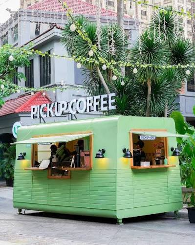

Pick Up Coffee
Coffee Shop | Around TUP manila
I recommend this place because of its affordable price yet expensive taste

Bo's Coffee
Coffee Shop | Around Manila
I recommend Bo's Coffee for students who want to enjoy coffee in a comfortable place while studying or relaxing.

Starbucks
Coffee Shop | SM Manila
I recommend this place for its variety of coffee and drinks and its comfortable atmosphere for meeting friends.